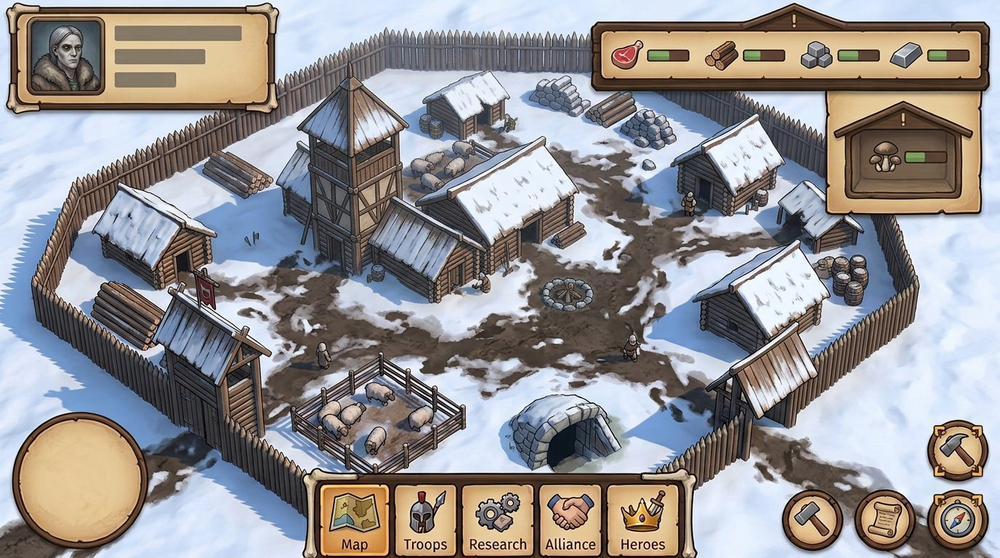
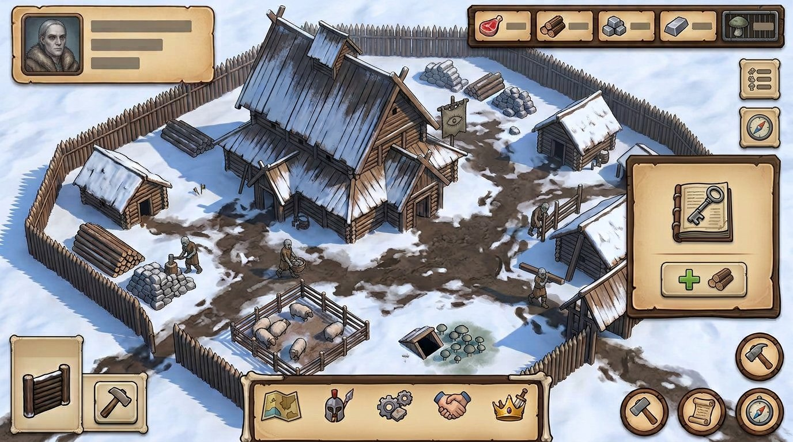
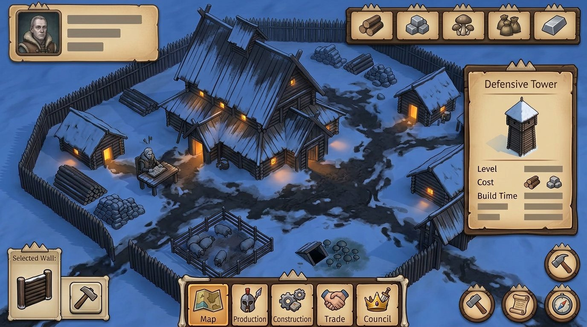
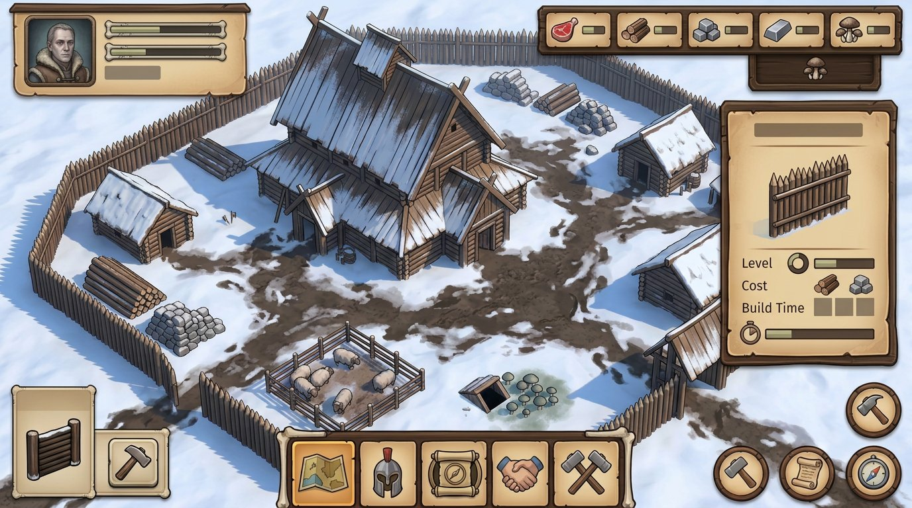
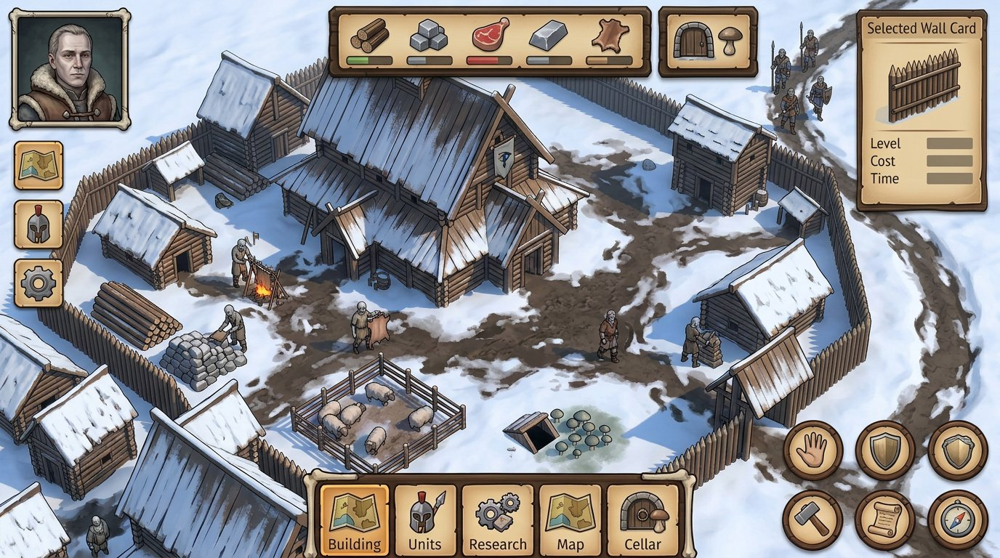
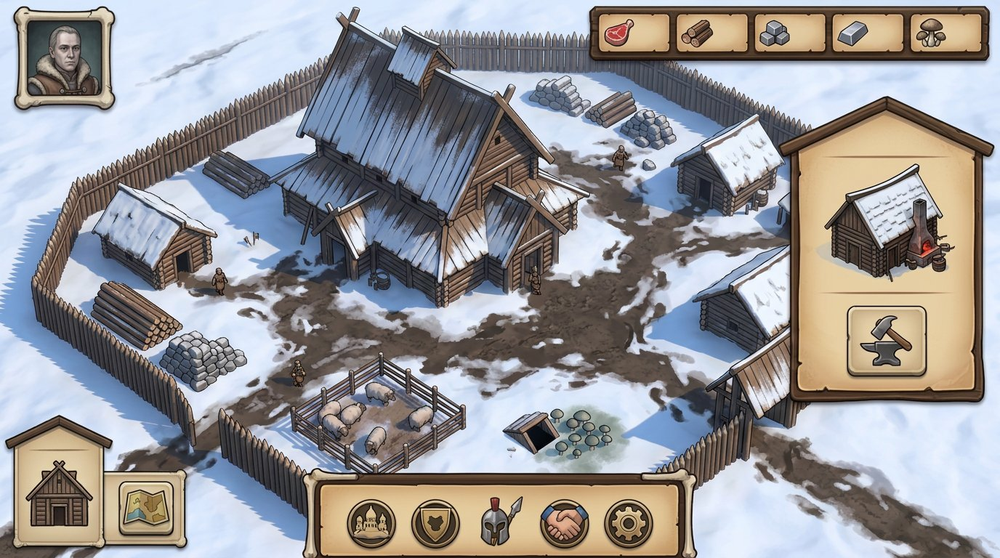
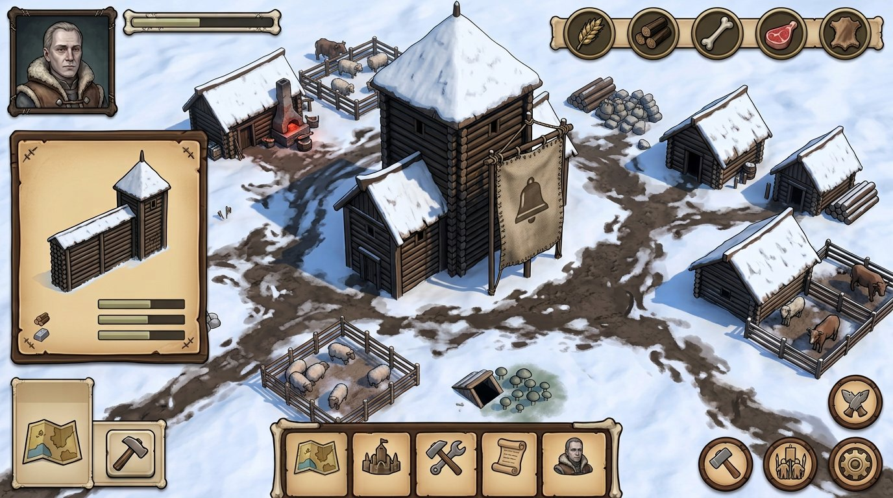
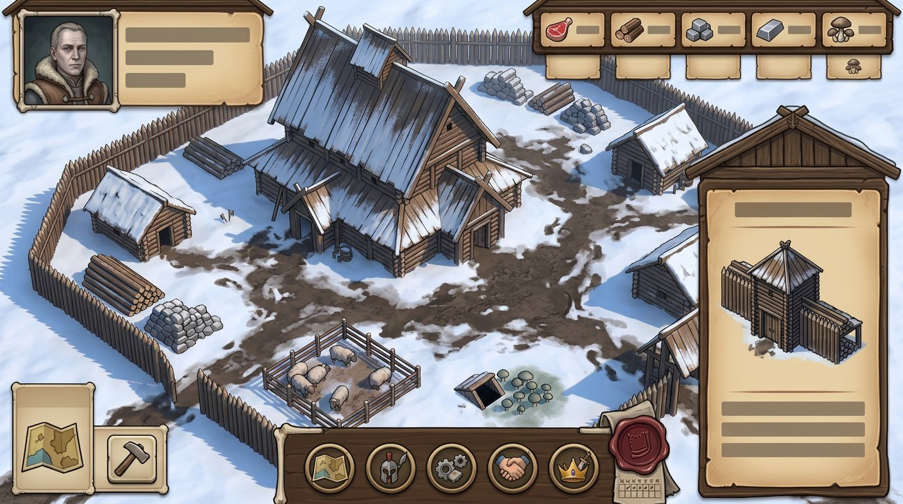
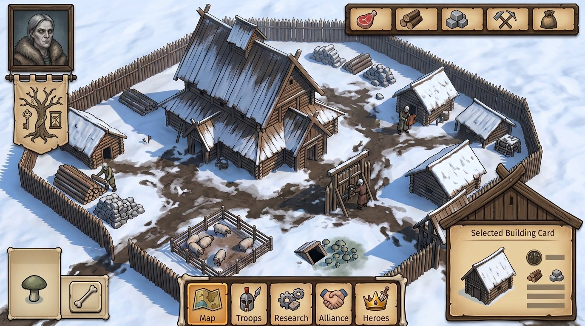
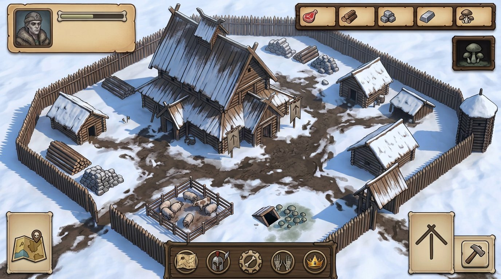

Крыша и шов
Повторяемый контур напоминает, что двор удерживает ум; без свечения и магических связей.
The Dead Lords · lore-led UI art direction
Новая серия из 10 эскизов строилась вокруг двух выбранных вами опор — пергаментного зимнего двора № 01 и мягкой 3D-формы № 08. В замысле каждый вариант проверял отдельную деталь лора, а не только материал или цвет. Это визуальные гипотезы, не финальный skin.
Повторяемый контур напоминает, что двор удерживает ум; без свечения и магических связей.
Спокойный портрет и личное знамя показывают отдельного лорда, а не общий разум.
Мясо идёт от стада; грибы живут отдельно в погребе и не становятся едой.
Столичный срок можно обозначить печатью и делениями календаря, не магическим троном.
Откройте картинку в полном размере. Подписи описывают замысел промптов, а не гарантированную точность деталей: генератор часто удерживал один и тот же ракурс.

Один скатный контур проходит через здания, карточки и состояние выбора.

Портрет, шов и личный знак подчёркивают, что ум снова принадлежит одному человеку.

Тёплые окна и обычная работа показывают бессонную жизнь без хоррора.

Грибы вынесены в отдельную тихую зону, не смешаны с едой и припасами двора.

Мёртвые живут внутри двора, живые остаются людьми за его стеной — без карикатуры.

След ямы остаётся частью ландшафта, но не превращается в монстра или игровую цель.

Один личный знак связывает лорда с его крышей, без выдуманной страны или фракции.

Деления календаря и печать показывают конечный срок как правило людей, не магию трона.

Разные жители и задачи подчёркивают отдельные умы после гибели Матери.

Объединяет личность лорда, деревянную крышу и спокойную систему панелей в один знак.
{kind=link}
{kind=link}
{kind=link}
{kind=link}
{kind=link}
{kind=link}
{kind=link}
{kind=link}
{kind=link}
{kind=link}